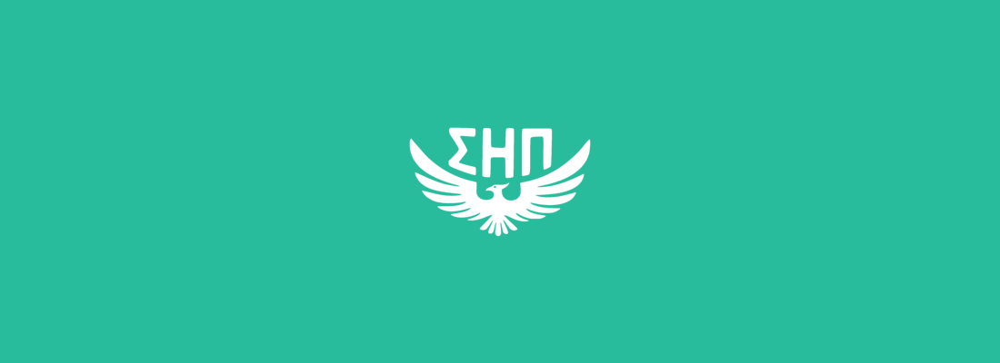

Sigma Eta Pi
SEP is Berkeley's co-ed entrepreneurship fraternity.
As an active brother, I was tasked with shaping the brand for the fraternity, and produced a whole lot of marketing and visual material. Our combined efforts led to the highest-attended rush events in our chapter's history!
I can provide a brand book upon request.

Branding/Content
For the Fall semester, the prospective theme was 'disrupt' - a little gauche and a little too on the nose, considering that our representation was mainly STEM and in the tech sector. I opted to go for 'diverge' instead - deviation from the normal path was a good way to explain the idea of entrepreneurship in college; disrupt being a buzzword lacking tact and implying some sort of hegemony.Thematically, I wanted to keep it digital feeling - there was no denying it, our fraternity was invariably tied to engineering and computing; in our goal to recruit more underclassmen, I wanted the interest of rushees to be at least subconsciously well aligned.
A draft of Fall 2016's flyers.
The semester prior (Spring 2016) I honed in on the theme of starting up a venture, taken to its logical conclusion. Creating a startup is something explosive, something high velocity; it reminded me of a rocket launch, each one signifying a great advance in modern technology. For the semester's recruitment, I decided to adopt the phrase "Prepare for Takeoff" as the motif.

Spring 2016's flyers.
I put together a rush video to be played at events as well.
Other material followed the guidelines I'd set, and was used for marketing and promotional purposes throughout the semester. I can provide more images upon request!

A banner we got printed on vinyl and use at our events now.